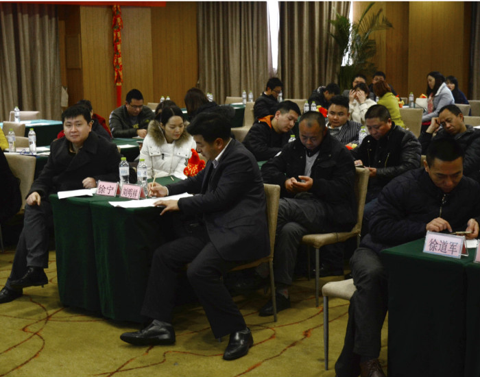
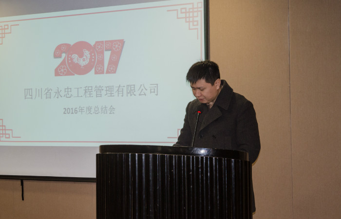
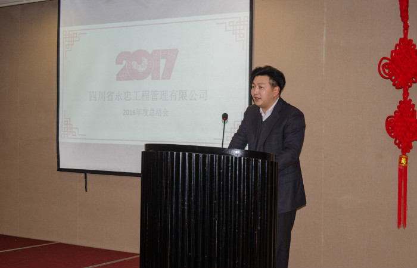
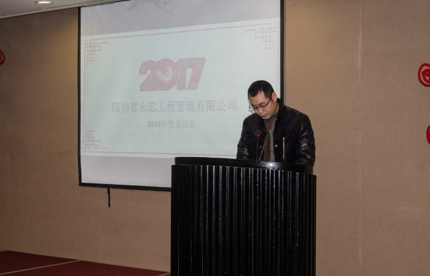
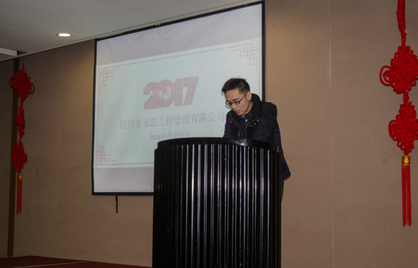
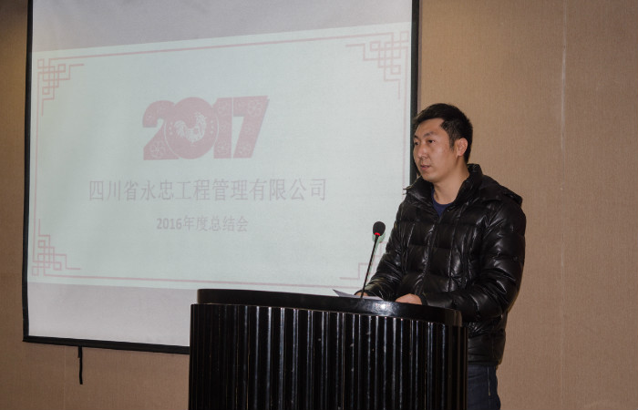
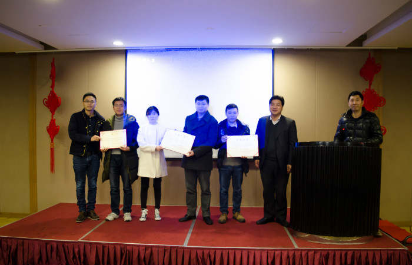
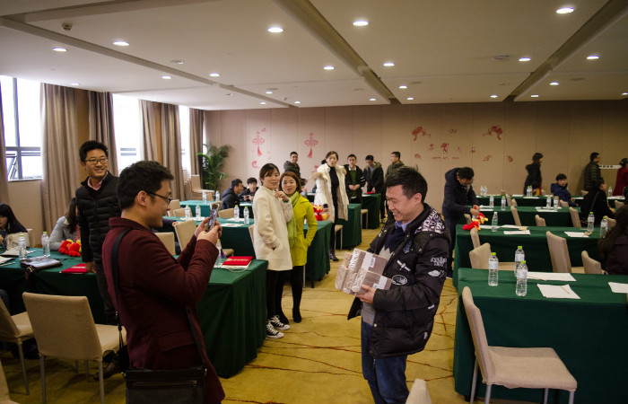
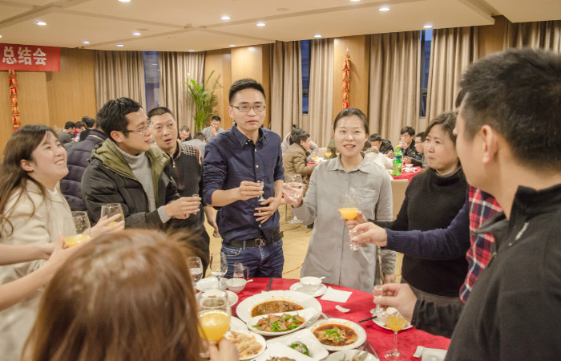
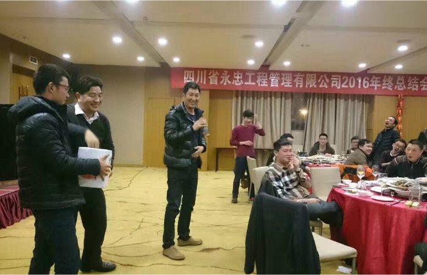

- 四川省永忠工程管理有限公司2017年年会报道
- 文章来源： 时间：2017-01-23 20:56:47
2017年1月23日，我公司全体人员在艾美克雅阁大酒店隆重举行了2016年度总结大会。公司董事长徐宁先生致新春贺词并对公司2016工作进行了全面总结以及对2017年工作作了新的
要求、新的部署和新的规划。公司各部门分管副总和经理对各自负责部门分别作了2016年工作汇报和2017年工作具体部署。公司各部门优秀员工代表分别就各自负责的具体工作进行了总
结和汇报。随后，公司总经理徐宁先生和常务副总刘明祥先生分别对2016年公司优秀部门和公司优秀员工代表进行了现场颁奖和表彰，号召公司全体员工学习他们在各自工作岗位上尽职
尽责、任劳任怨、顾全大局的团队协助精神；鼓励他们戒骄戒躁，在新的一年里继续起好模范带头作用，为公司作出新贡献。大会结束：公司全员齐聚一堂，举行了晚宴和抽奖活动，大
家相互寒暄、推杯换盏、欢声笑语，整个活动在一片欢乐祥和中进行。送走2016，迎来2017，勤奋不屈的永忠人将继续在永忠领导人的带领下：昂首阔步、披荆斩棘、持续开拓，创造和
实现公司价值目标。










